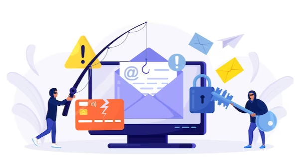
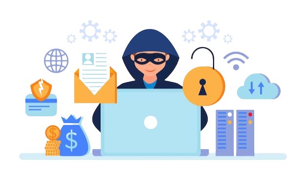

As technology continues to advance, so do the methods of cybercriminals. One of the most common tactics used by these attackers is phishing. Phishing is a type of social engineering attack where malicious actors attempt to gain access to sensitive information such as usernames, passwords, and credit card details by disguising themselves as a trustworthy entity.
They typically do this using fake emails, social media messages, or even phone calls. Unfortunately, phishing attacks have been on the rise, and it's not just individuals who are at risk but also businesses of all sizes. In fact, a recent study showed that 90% of all cyber attacks start with phishing. Therefore, it's essential to understand the importance of phishing prevention in maintaining data security.
Protecting sensitive information is paramount for any business as a data breach can have devastating consequences. It can result in financial loss, damage to a company's reputation, and even legal repercussions. However, preventing phishing attacks can be challenging, as attackers can be very convincing.

Phishing attacks exploit human trust by employing deceptive emails, messages, or websites that mimic legitimate sources. Cybercriminals manipulate recipients psychologically, enticing them to click on harmful links or disclose sensitive information like passwords and credit card details. These attacks take advantage of human vulnerability.
The consequences of a successful phishing attack can be catastrophic. Cybercriminals manage to breach personal and financial accounts without authorization, resulting in identity theft, monetary damages, and unauthorized transactions. Additionally, phishing attacks can act as gateways for more complex cyber assaults, potentially jeopardizing an entire network.
Safeguarding sensitive information stands as the primary motive behind phishing prevention efforts. Be it personal data or confidential business secrets, preventing unauthorized access plays a pivotal role in preserving trust and maintaining confidentiality.

The occurrence of phishing attacks can lead to substantial monetary losses for both individuals and organizations. By effectively preventing these attacks, we can ensure the preservation of financial resources, which can then be utilized for promoting growth and driving innovation.
In order to uphold a positive image and retain the trust of customers, partners, and stakeholders, it is imperative to safeguard against successful phishing attacks. These attacks can significantly harm an individual's or a business's reputation, making their prevention vital in today's competitive environment. If you're curious about strengthening your defenses against phishing attacks, your destination should be phishprotection.com.
The development of advanced anti-phishing tools has been made possible by technological progress. Through the use of artificial intelligence and machine learning algorithms, patterns in emails can now be detected and potential phishing attempts can be identified.
Familiarity with the psychological ploys employed by cybercriminals enables individuals and organizations to detect and counter phishing attempts more effectively.
In summary, phishing prevention is one of the most critical aspects of maintaining data security in any organization. By implementing best practices such as educating employees on how to identify and report phishing attempts, using email filters and authenticating emails, and regularly monitoring and updating security measures, companies can significantly reduce the risk of data breaches and protect sensitive information. It's important to remember that cybercriminals are always looking for new ways to exploit vulnerabilities, so staying vigilant and proactive in preventing phishing attacks should be a top priority for all organizations.